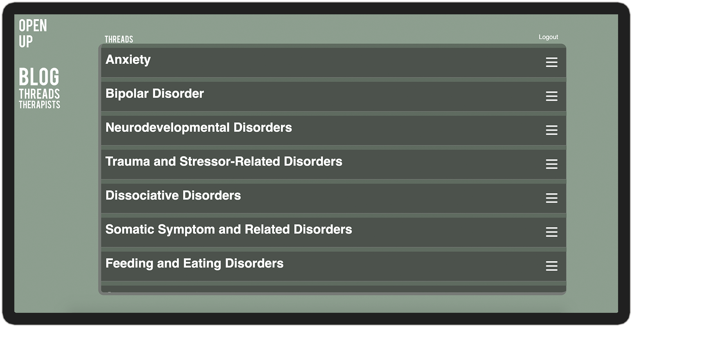

Projects 1
Anime Trailers
This web app allows the user to find trailers and promo videos from a selection of top or upcoming anime or also allows search for a specific anime. It provides a quick way to discover new animes to watch and instantly get an idea if you are interested in investing your time in watching it.

Tech
 HTML
HTML CSS
CSS JavaScript
JavaScript Jquery
Jquery
Projects 2
Open-Up-App
Open Up is an anonymous online social space intended for users with mental health disorders. It provides the user with the freedom to express themselves and get advice from others and licensed therapists about mental health issues without having to show their identity.
Tech
- HTML
- CSS
- JavaScript
- Jquery
Projects 3
Bit Synth
Bit Synth is an in browser polyphonic synthesizer and step sequencer built with the help of the tone.js library. It allows the user to shape soundwaves, create and save synth presets to contribute to a public library of synth presets inspired by retro 8 bit and 16 bit video games

Tech
- HTML
- CSS
- JavaScript
 React
React Node.Js
Node.Js Express
Express MongoDB
MongoDB